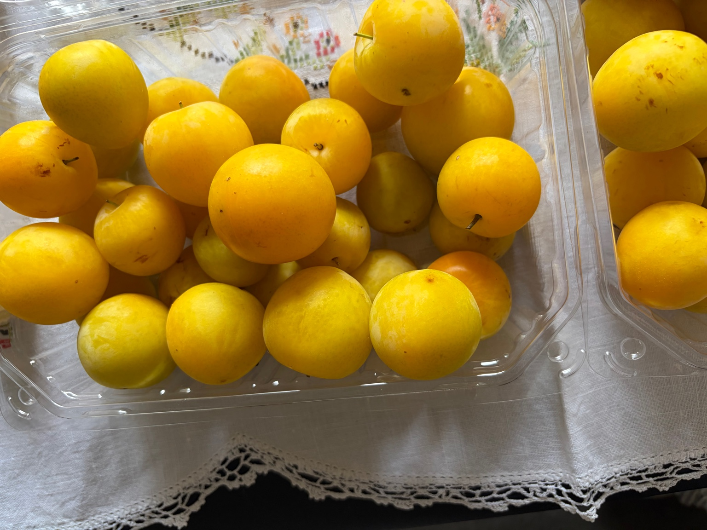
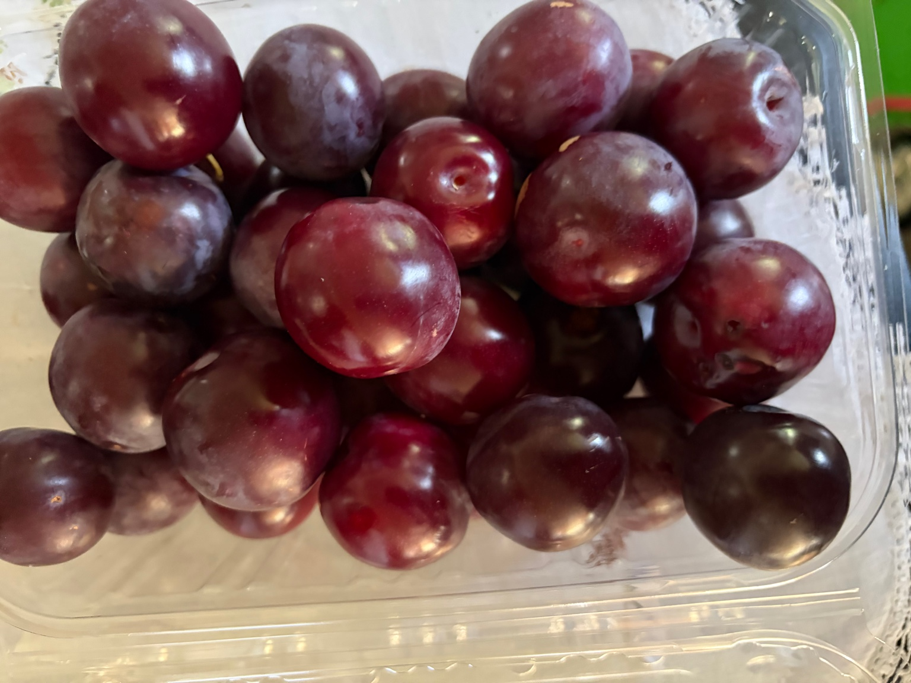
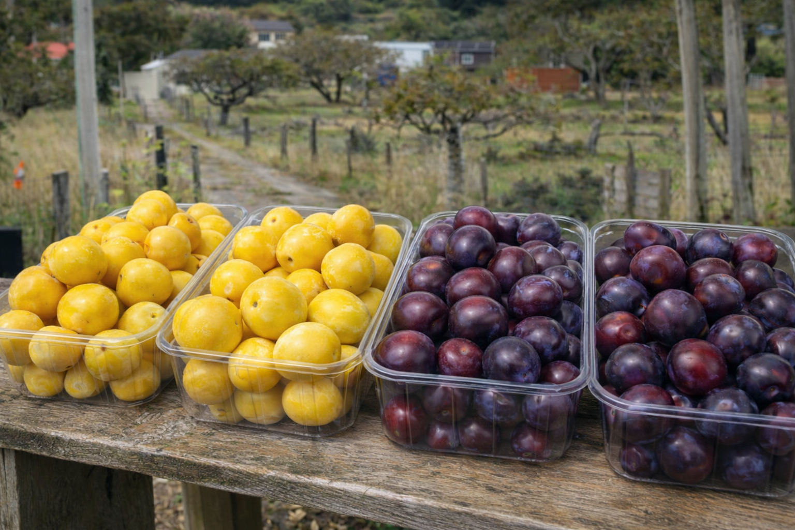

Seasonal Plums
A small, family-run orchard in Heathcote growing seasonal plum varieties, available during the harvest period.
Key information
Pricing
$5 per kg
Price applies to all available plum varieties.
Pickup hours
1pm – 7pm
Or by prior arrangement — please call or text if you’d like to collect outside these hours.
Pickup details
Pickup only from the orchard. Availability changes throughout the season.
About
Heathvale Orchards is a small orchard located in Heathcote, Christchurch. A range of plum varieties are grown on site and are available seasonally during the harvest period. Produce is available for pickup directly from the orchard.
Plum varieties
Heathvale Orchards grows several plum varieties throughout the season. Availability changes as different varieties ripen.
- Shiro – juicy yellow plums, great for eating
- Billington – versatile, ideal for jam and sauces
- Burbank – sweet eating plums
- Black Doris – excellent for jam and preserving
- Purple King – late-season variety
Photos



Visit
Pickup is available during the plum season. Please contact us for current availability and pickup arrangements.